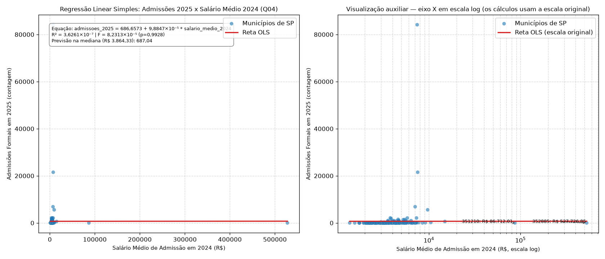
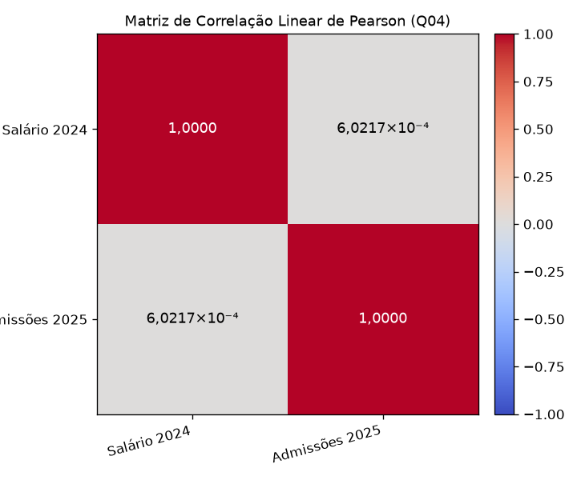
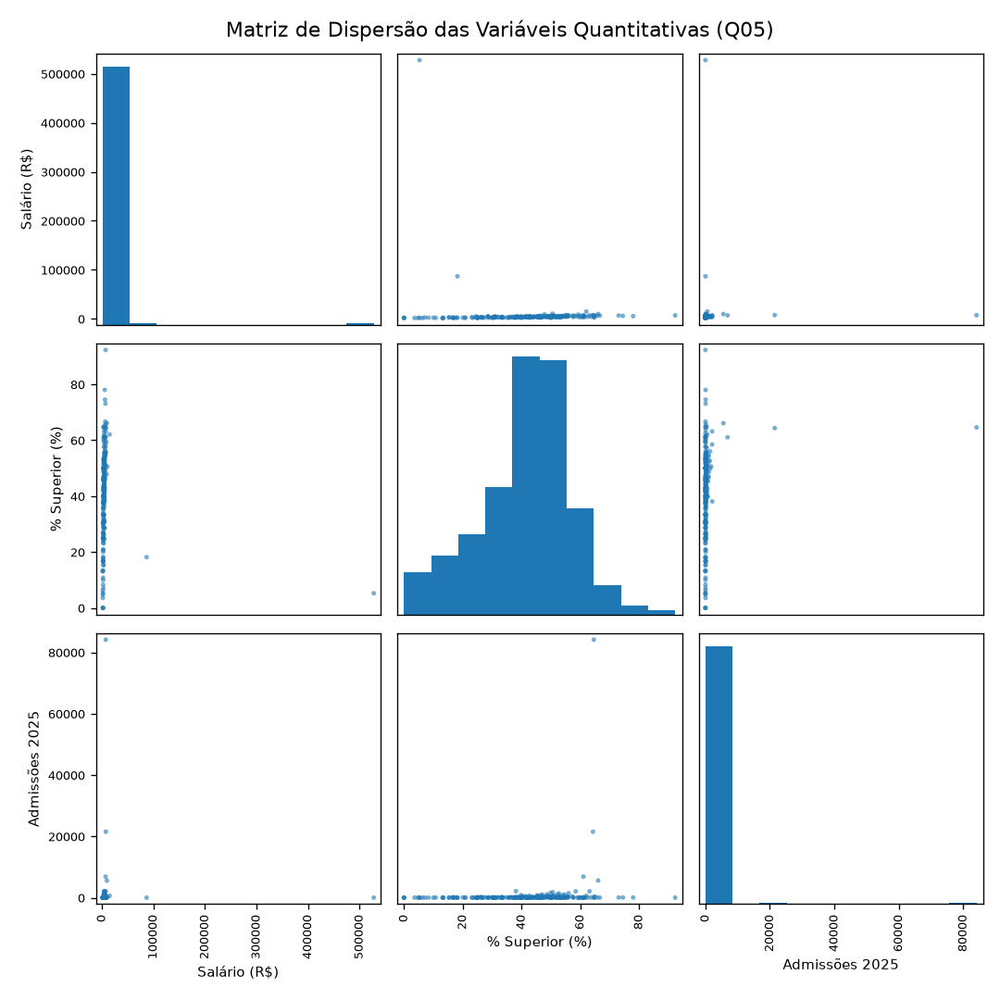
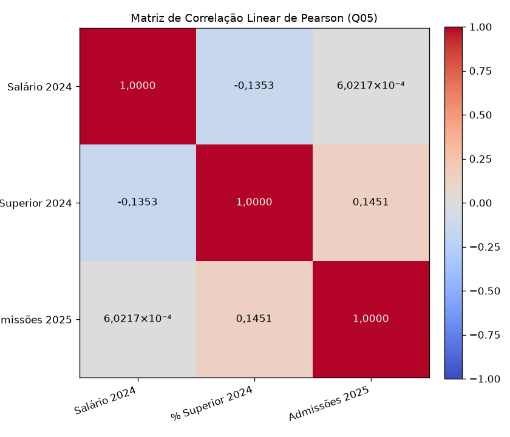
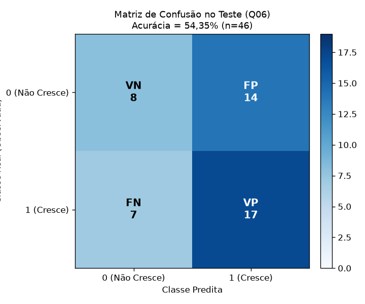
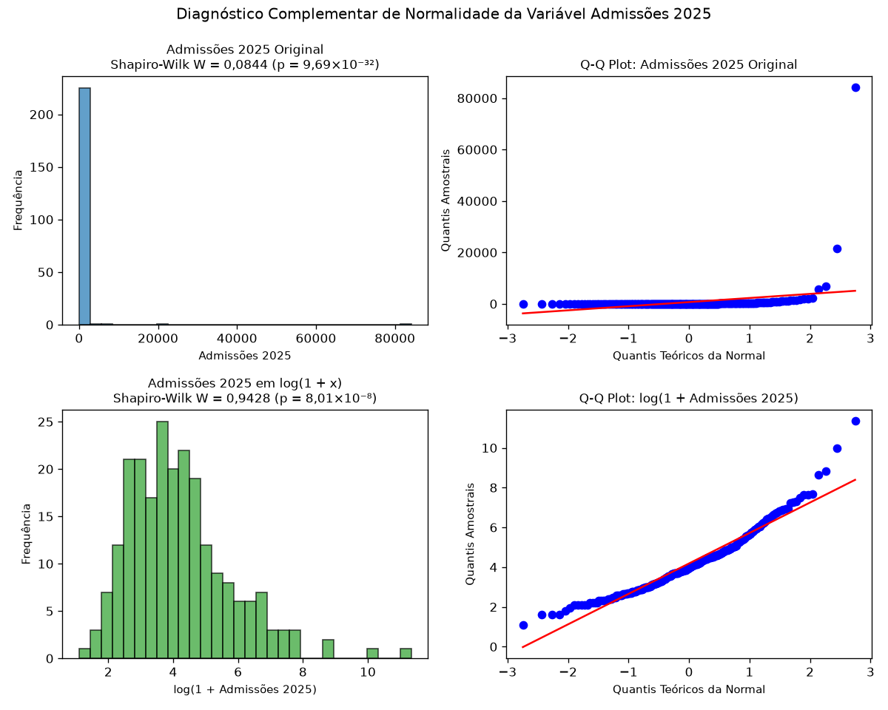
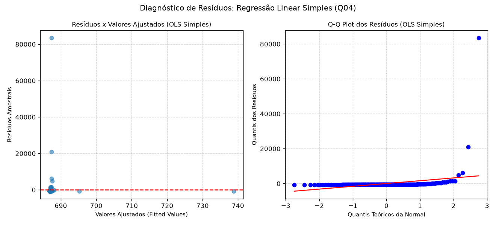
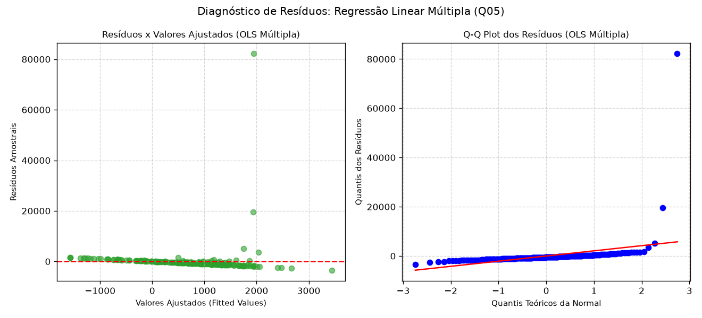

Integrantes (nome completo + RM): [HUMANO — preencher]
No âmbito do desafio CitizenTech, profissionais com formação superior que planejam ou executam transição de carreira técnica (em ocupações analíticas, de tecnologia da informação e correlatas) defrontam-se frequentemente com assimetrias de informação ao avaliar diferentes municípios do Estado de São Paulo. Este relatório usa registros administrativos públicos para examinar, de forma auditável, se salário e escolaridade de admissão se associam ao volume municipal de admissões formais.
O objetivo técnico deste trabalho é investigar como o volume municipal de admissões formais acumuladas em seis grupos ocupacionais selecionados se relaciona com os níveis salariais médios de admissão e com o grau de escolaridade superior dos profissionais admitidos nos municípios paulistas.
A pergunta de negócio central é: o salário médio de admissão e a proporção de contratados com formação superior em 2024 fornecem capacidade preditiva e explicativa robusta sobre o volume e a expansão das admissões formais municipais em 2025?
Ressalta-se, desde já, o rigor e a ética desta avaliação: os dados e modelos aqui desenvolvidos descrevem agregados territoriais de admissão e não estimam probabilidade individual de colocação no mercado de trabalho, tampouco constituem recomendações subjetivas sobre escolhas individuais.
Os dados provêm dos microdados públicos oficiais do Novo Caged (Ministério do Trabalho e Emprego — MTE), cobrindo o Estado de São Paulo (código UF 35). A base foi consolidada a partir de registros mensais de movimentações por competência entre 2024 e 2025 (competências 202401 a 202412 e 202501 a 202512), sem a utilização de dados posteriores a 2025.
O recorte analítico contemplou seis grupos ocupacionais da Classificação Brasileira de Ocupações (CBO) com aderência direta a transições técnicas e de tecnologia, agregando todas as faixas de escolaridade declaradas. A população de interesse foi pré-registrada e congelada: municípios do Estado de São Paulo com pelo menos 10 admissões formais no recorte ocupacional ao longo de 2024. O arquivo de entrada é a base consolidada oficial e única deste estudo:
base_municipal.csv5dbc73acfb01012a7aa0fa45ef457a7226639a8b48bda85b0389972f99a9a7ee| Variável | Tipo | Unidade | Descrição Técnica |
|---|---|---|---|
municipio |
Categórico | Código IBGE | Identificador municipal de 6 dígitos no Estado de São Paulo. |
uf |
Categórico | Sigla / Código | Unidade Federativa ("SP" ou "35"). |
admissoes_2024 |
Quantitativo discreto | Contagem inteira | Total de admissões formais no recorte de seis grupos ocupacionais em 2024. |
admissoes_2025 |
Quantitativo discreto | Contagem inteira | Total de admissões formais no recorte de seis grupos ocupacionais em 2025. |
salario_medio_2024 |
Quantitativo contínuo | R$ (nominal) | Salário médio de admissão declarado no recorte em 2024 (soma salarial / admissões com salário válido). |
percentual_superior_2024 |
Quantitativo contínuo | % | Proporção de admissões com ensino superior completo ou pós-graduação em 2024. |
crescimento |
Binário | 0 ou 1 | Indicador de expansão: 1 se admissoes_2025 > admissoes_2024, 0 caso contrário. |
A base é inteiramente real, extraída de registros administrativos obrigatórios de contratações regidas pela CLT. Entre as limitações metodológicas inerentes, destacam-se: 1. Recorte ocupacional específico: Os valores não refletem o total do emprego municipal, limitando-se aos seis grupos ocupacionais selecionados. 2. Trabalho formal exclusivamente: A base não capta contratos de prestação de serviços como pessoa jurídica (PJ), cooperados ou trabalho informal. 3. Perspectiva territorial municipal: A unidade de observação é o município onde ocorreu o vínculo formal, não refletindo diretamente o perfil individual dos profissionais residentes.
Conforme diretriz didática do enunciado acadêmico, assumiu-se que a variável quantitativa de admissões municipais segue uma Distribuição Normal de Probabilidade. Analisou-se a variável admissoes_2025 para a população de N = 229 municípios paulistas.
Sob o modelo paramétrico adotado, foram computadas a média populacional (μ), a mediana observada e o desvio padrão populacional com graus de liberdade populacionais (σ, com ddof = 0):
| Medida Estatística | Símbolo | Valor Calculado |
|---|---|---|
| População de municípios | N | 229 |
| Média populacional | μ | 687,3231 |
| Mediana observada | Mediana | 53,0000 |
| Desvio padrão populacional (ddof=0) | σ | 5.740,5799 |
Utilizando a função de distribuição acumulada da Normal padrão sob os parâmetros μ = 687,3231 e σ = 5.740,5799:
a) Probabilidade da variável ser menor do que a média dos registros: P(X < μ) = Φ((687,3231 − 687,3231) / 5.740,5799) = Φ(0) = 0,5000 Classificação do evento: Evento equiprovável (P = 0,5000 ou 50,00%).
b) Probabilidade da variável ser maior do que a mediana dos registros: P(X > Mediana) = 1 − Φ((53,0000 − 687,3231) / 5.740,5799) = 1 − Φ(−0,1105) = 0,543993 Classificação do evento: Evento provável (P > 0,50, especificamente 54,40%).
Por construção matemática, em qualquer distribuição Normal contínua simétrica, a probabilidade de uma observação situar-se abaixo da média é estritamente igual a 0,5000 (evento equiprovável).
A probabilidade teórica de P(X > 53) = 0,5440 decorre de que a mediana empírica (53,00) situa-se substancialmente abaixo da média aritmética (687,32). Essa discrepância evidencia forte assimetria positiva na distribuição empírica real (a média é puxada para cima por municípios de grande porte, como a capital São Paulo). Ao projetar essa assimetria na curva Normal simétrica, a área sob a curva à direita de 53 abrange 54,40% da densidade teórica. Ressalta-se que este é um cálculo teórico decorrente da premissa assumida pelo enunciado pedagógico.
Ainda sob a premissa de Normalidade assumida pelo enunciado, foram conduzidos dois testes de hipótese unilaterais para a média populacional de admissões em 2025, utilizando o Teste Z (amostragem sem reposição e desvio padrão populacional de referência σ_ref = 5.740,5799). As sementes pseudoaleatórias e tamanhos amostrais foram congelados no pré-registro.
| Parâmetro / Métrica | Teste A (Unilateral à Esquerda) | Teste B (Unilateral à Direita) |
|---|---|---|
| Hipótese Nula (H₀) | μ = 687,3231 | μ = 687,3231 |
| Hipótese Alternativa (H₁) | μ < 687,3231 (menor) | μ > 687,3231 (maior) |
| Tamanho amostral (n) | 20 | 25 |
| Nível de significância (α) | 6% (0,06) | 9% (0,09) |
| Semente pseudoaleatória | 42 | 43 |
| Média amostral observada (x̄) | 102,0500 | 215,6800 |
| Desvio padrão de referência (σ) | 5.740,5799 | 5.740,5799 |
| Erro padrão (σ / √n) | 1.283,6310 | 1.148,1160 |
| Estatística de teste (Z) | −0,4560 (−0,455951) | −0,4108 (−0,410797) |
| Valor crítico (Z_crítico) | −1,5548 | +1,3408 |
| Região Crítica (Rejeição) | Z < −1,5548 | Z > 1,3408 |
| p-valor | 0,3242 (0,324213) | 0,6594 (0,659389) |
| Decisão Estatística | Não rejeita H₀ | Não rejeita H₀ |
A razão matemática central para a não rejeição em ambos os testes reside na magnitude extremamente elevada do desvio padrão populacional (σ = 5.740,58), que inflaciona o erro padrão da média amostral. Amostras de n = 20 e n = 25 possuem poder estatístico insuficiente para discriminar desvios na presença de altíssima heterogeneidade municipal. Em termos metodológicos, "não rejeitar H₀" não equivale a provar que a média amostral é idêntica à populacional, mas apenas que os desvios observados são plausíveis sob o acaso na hipótese paramétrica nula.
Investigou-se a relação bivariada entre a variável explicativa quantitativa X (salario_medio_2024) e a variável de resposta Y (admissoes_2025).


| Medida Estatística | Valor Obtido | Interpretação |
|---|---|---|
| Covariância amostral (ddof=1) | 121.420,3916 | Positiva, mas em escala monetária-contagem não padronizada. |
| Correlação Linear de Pearson (r) | 0,000602 | Praticamente zero (r ≈ 0,0006), ausência de dependência linear. |
Ajustou-se o modelo via Mínimos Quadrados Ordinários (OLS) com intercepto: admissoes_2025 = 686,6573 + 0,00009885 × salario_medio_2024
Equação arredondada para 4 casas decimais: admissoes_2025 = 686,6573 + 0,0001 × salario_medio_2024
Calculou-se a previsão para o ponto central da distribuição salarial, definido pela mediana de salario_medio_2024 (X = R$ 3.864,3313):
Ŷ = 686,6573385 + 0,0000988475 × 3864,331304 = 687,0393 admissões
O modelo linear simples revela que o salário médio municipal de admissão de 2024 não possui capacidade de prever o volume de admissões em 2025. O R² obtido indica que menos de 0,0001% da variação no número de admissões é explicada pela remuneração média. O Teste F (p = 0,9928 ≫ 0,05) atesta a total ausência de significância do ajuste linear.
Consequentemente, a previsão na mediana salarial (Ŷ = 687,04) converge praticamente para a média incondicional populacional (687,32), demonstrando que a reta OLS é substancialmente horizontal. Municípios com altos salários médios de admissão podem apresentar tanto elevados volumes de admissão quanto volumes modestos, desfazendo a premissa ingênua de que volume de contratações caminha linearmente junto a salários mais altos.
A inspeção transparente da base municipal e o bloco descritivo pontos_extremos_salario gerado pelo programa portátil identificam claramente três municípios com remunerações declaradas discrepantes em 2024:
1. Município 352885: Registrou 19 admissões em 2024 com salário médio declarado de R$ 527.726,85 (19 salários válidos em 2024), atingindo uma razão extraordinária de 136,56 vezes a mediana salarial municipal (R$ 3.864,33). Em 2025, esse mesmo município registrou 12 admissões formais com salário médio de R$ 2.358,77.
2. Município 351210: Registrou 11 admissões em 2024 com salário médio declarado de R$ 86.712,01 (11 salários válidos em 2024), correspondendo a 22,44 vezes a mediana salarial municipal. Em 2025, esse município registrou 8 admissões com salário médio de R$ 2.114,21.
3. Município 350320: Registrou 801 admissões em 2024 com salário médio de R$ 14.936,02 (800 salários válidos em 2024), correspondendo a 3,87 vezes a mediana.
4. Demais municípios: Todos os demais 226 municípios da população analisada situam-se estritamente abaixo de aproximadamente R$ 15 mil.
A queda abrupta observada nos municípios 352885 e 351210 entre 2024 e 2025 (de R$ 527 mil para R$ 2,3 mil e de R$ 86 mil para R$ 2,1 mil) é fortemente compatível com a hipótese técnica de erro de declaração ou de escala monetária no campo salário do Novo Caged em 2024 (por exemplo, inclusão indevida de valores anuais, bônus corporativos pontuais ou digitação de centavos sem separador). Ressalta-se que esta é uma hipótese analítica plausível, mas não verificada individualmente junto aos declarantes.
A decisão técnica de manter integralmente essas observações decorre do protocolo pré-registrado D11, o qual proíbe terminantemente o corte ou exclusão ad hoc de outliers após a visualização dos dados e estimativas econométricas, blindando a pesquisa contra manipulações de conveniência.
Em cumprimento estrito a essas diretrizes de integridade: - Uma análise de sensibilidade com a exclusão desses pontos atípicos NÃO foi realizada neste estudo, ficando categorizada como [TRABALHO FUTURO — ANÁLISE DE SENSIBILIDADE ROBUSTA]. - Não foram estimados nem reportados coeficientes ou modelos "sem outliers", garantindo que nenhum número além do pré-registro oficial figure nas evidências e deliberações.
A análise foi expandida para três variáveis quantitativas: a variável resposta Y (admissoes_2025) e duas variáveis explicativas: X₁ (salario_medio_2024) e X₂ (percentual_superior_2024).


Matriz de Covariância Amostral (ddof=1):
| Variável | Salário Médio 2024 | % Superior 2024 | Admissões 2025 |
|---|---|---|---|
| Salário Médio 2024 | 1.228.361.218,1211 | −74.388,0764 | 121.420,3916 |
| % Superior 2024 | −74.388,0764 | 245,9669 | 13.088,0251 |
| Admissões 2025 | 121.420,3916 | 13.088,0251 | 33.098.793,7548 |
Matriz de Correlação de Pearson:
| Variável | Salário Médio 2024 | % Superior 2024 | Admissões 2025 |
|---|---|---|---|
| Salário Médio 2024 | 1,0000 | −0,1353 | 0,0006 |
| % Superior 2024 | −0,1353 | 1,0000 | 0,1451 |
| Admissões 2025 | 0,0006 | 0,1451 | 1,0000 |
O ajuste OLS resultou nos seguintes coeficientes e equação: - Intercepto (β₀): −1582,2304 (−1582,230380) - Coeficiente do Salário (β₁): +0,003383 (+0,00338317) - Coeficiente do % Superior (β₂): +54,233691 (+54,23369054)
Equação do modelo: admissoes_2025 = −1582,2304 + 0,0034 × salario_medio_2024 + 54,2337 × percentual_superior_2024
Para um município hipotético com os valores medianos de ambas as preditoras (X₁ = R$ 3.864,3313 e X₂ = 43,3333%): Ŷ = −1582,23038 + 0,00338317 × 3864,331304 + 54,23369054 × 43,333333 = 780,9699 admissões
A inclusão do percentual de admissões com ensino superior elevou o R² de praticamente zero para 2,15%, trazendo o p-valor do teste F para 0,0862. Esse nível de significância é marginal (significativo a 10%, mas não a 5%). O coeficiente da variável de escolaridade superior (+54,23) indica que, mantido o salário fixo, cada ponto percentual adicional de admitidos com ensino superior associa-se em média a cerca de 54 admissões adicionais no município. Contudo, mais de 97,8% da variabilidade do volume municipal de admissões permanece não explicada por essas duas métricas estruturais.
No contexto multivariado, os pontos extremos de salário (município 352885, com R$ 527.726,85, e município 351210, com R$ 86.712,01) exercem impacto direto na estrutura de covariâncias: a variância amostral de salario_medio_2024 atinge o valor colossal de 1,228 × 10⁹, gerando uma distância de Mahalanobis extrema para essas duas unidades territoriais. Apesar de X₁ possuir coeficiente positivo de +0,0034 no modelo conjunto, seu efeito prático na previsão municipal é ofuscado pela magnitude do coeficiente de escolaridade superior.
Em consonância com o pré-registro D11, todas as 229 observações foram mantidas no modelo de regressão linear múltipla. Uma reestimação multivariada sem os pontos atípicos de remuneração NÃO foi efetuada, ficando expressamente rotulada como [TRABALHO FUTURO — REGRESSÃO MULTIVARIADA ROBUSTA].
Modelou-se a probabilidade municipal de expansão formal no emprego técnico, definida pela variável indicadora binária crescimento (1 se admissoes_2025 > admissoes_2024, 0 caso contrário), utilizando estritamente as duas covariáveis explicativas autorizadas: salario_medio_2024 e percentual_superior_2024.
Para evitar vazamento e avaliar poder de generalização, a população de N = 229 municípios foi dividida em conjunto de treino (80%, n = 183) e conjunto de teste (20%, n = 46) estratificados pelo alvo sob a semente pseudoaleatória congelada 44.
Ajustado via Máxima Verossimilhança no conjunto de treino (n=183): - Intercepto (β₀): −0,649693 - β_salario: −0,00005504 (−5,5038e-05) - β_% superior: +0,022325
Equações de especificação: logit(p) = ln(p / (1 − p)) = −0,6497 − 0,0001 × salario_medio_2024 + 0,0223 × percentual_superior_2024
p = 1 / (1 + exp(−(−0,6497 − 0,0001 × salario_medio_2024 + 0,0223 × percentual_superior_2024)))
Adotou-se o limiar clássico de decisão probabilística p ≥ 0,50.

Matriz de Confusão no Teste (n = 46, avaliação fora da amostra):
| Real / Predito | Predito 0 (Não Cresceu) | Predito 1 (Cresceu) | Total Real |
|---|---|---|---|
| Real 0 (Não Cresceu) | 8 (VN) | 14 (FP) | 22 |
| Real 1 (Cresceu) | 7 (FN) | 17 (VP) | 24 |
| Total Predito | 15 | 31 | 46 |
Comparativo de Desempenho: - Acurácia no Ajuste (Treino, n=183, in-sample descritiva): 53,01% (97 acertos em 183 municípios). - Acurácia no Teste Estratificado (n=46, out-of-sample): 54,35% (25 acertos em 46 municípios).
Para o cenário municipal com os atributos medianos (X₁ = R$ 3.864,3313 e X₂ = 43,3333%): logit(p) = −0,649693 − 0,000055038 × 3864,3313 + 0,0223255 × 43,3333 = +0,1050
p = 1 / (1 + exp(−0,1050)) = 0,526240 (52,62%)
O modelo logístico apresenta desempenho preditivo limitado (54,35% de acurácia no teste), situando-se marginalmente acima do lançamento de uma moeda equilibrada (50%).
A análise da matriz de confusão no teste aponta uma fragilidade crítica: elevada taxa de falsos positivos (14 municípios em 22 que não cresceram foram incorretamente rotulados como em crescimento). Isso indica que municípios com maior proporção de ensino superior recebem probabilidades ligeiramente superiores a 50%, mas muitos deles não mantêm crescimento de contratações no ano subsequente. Portanto, o salário médio e o percentual de ensino superior de um município não constituem garantia de crescimento sustentado das contratações formais no recorte técnico.
Em conformidade com os princípios da boa prática econométrica, realizou-se um diagnóstico complementar de normalidade e aderência dos resíduos, destacando a discrepância entre a premissa teórica do enunciado e os dados reais observados.
Avaliou-se a variável populacional admissoes_2025 na escala original e após a transformação logarítmica ln(1 + x):
| Escala da Variável | Estatística W | p-valor | Conclusão Estatística |
|---|---|---|---|
Escala Original (admissoes_2025) |
0,084408 | 9,6908 × 10⁻³² | Rejeição categórica da Normalidade (p ≪ 0,001). |
| Escala Transformada (ln(1 + x)) | 0,942802 | 8,0065 × 10⁻⁸ | Rejeição da Normalidade (p ≪ 0,001). |

Como evidenciado nos histogramas e gráficos Q-Q da figura acima, a distribuição empírica original apresenta cauda pesadíssima à direita (assimetria extrema), típica de redes urbanas onde a capital estadual e poucas metrópoles concentram ordens de grandeza a mais de movimentações formais do que os municípios de pequeno porte. Embora a transformação logarítmica suavize a escala, a hipótese de Normalidade é firmemente rejeitada em ambos os casos.


O exame dos resíduos de ambas as regressões lineares revela: 1. Heterocedasticidade acentuada: A variância dos resíduos cresce expressivamente nos valores ajustados mais altos, violando o pressuposto de homocedasticidade dos Mínimos Quadrados. 2. Não normalidade dos resíduos: Os gráficos Q-Q dos resíduos mostram desvios marcantes na cauda superior, demonstrando que os testes paramétricos convencionais devem ser interpretados estritamente como indicadores descritivos. 3. Comportamento dos pontos extremos de salário: - O município 352885 (salário de R$ 527.726,85 e 12 admissões em 2025) gera um valor ajustado na OLS simples de Ŷ ≈ 686,66 + 0,00009885 × 527726,85 ≈ 738,8 admissões, resultando em um resíduo amostral e_i = 12 − 738,8 = −726,8 admissões. Embora este resíduo não seja o mais extremo em magnitude absoluta (haja vista que a capital São Paulo gera resíduos da ordem de dezenas de milhares de contratações), a observação possui alavancagem horizontal (leverage) extrema no espaço de atributos. - O município 351210 (salário de R$ 86.712,01 e 8 admissões em 2025) gera valor ajustado de Ŷ ≈ 695,2 admissões, com resíduo e_i = 8 − 695,2 = −687,2 admissões. - Esses pontos têm alavancagem alta: podem influenciar a inclinação da reta OLS de forma desproporcional. A magnitude dessa influência (ex.: distância de Cook) não foi medida neste relatório. - Por fidelidade ao pré-registro D11, esses municípios foram preservados nos cálculos. A modelagem econométrica robusta a heterocedasticidade e resíduos atípicos (e.g., M-estimadores de Huber, RANSAC, erros-padrão robustos HC3 de White) NÃO foi implementada, constituindo [TRABALHO FUTURO — REGRESSÃO ROBUSTA E DIAGNÓSTICO DE INFLUÊNCIA].
Em uma consultoria técnica profissional voltada a clientes institucionais e lideranças de planejamento, resultados estatisticamente fracos são conclusões analíticas de alto valor. Documentar que determinadas variáveis não explicam o fenômeno evita alocações equivocadas de capital e falsas expectativas.
Todas as análises, tabelas e figuras deste relatório foram geradas de forma 100% determinística através de código em Python independente e portátil.
O programa portátil analise.py opera de forma totalmente autônoma, sem dependência de módulos ou pacotes proprietários locais, exigindo apenas as bibliotecas abertas padrão do ecossistema de dados (pandas, numpy, scipy, statsmodels, matplotlib, scikit-learn):
# Execução padrão (lê base_municipal.csv na mesma pasta e grava figuras em figuras/)
python analise.py base_municipal.csv --figuras figuras/ --json analise.json
4243numpy.random.default_rng(seed).choice(N, size=n, replace=False)44sklearn.model_selection.train_test_split(..., test_size=0.2, random_state=44, stratify=y)